Git Workspaces, Dynamic Tables, Power BI / Iceberg, and Governance
Please use your laptop (not your phone) for signup and the entire lab.
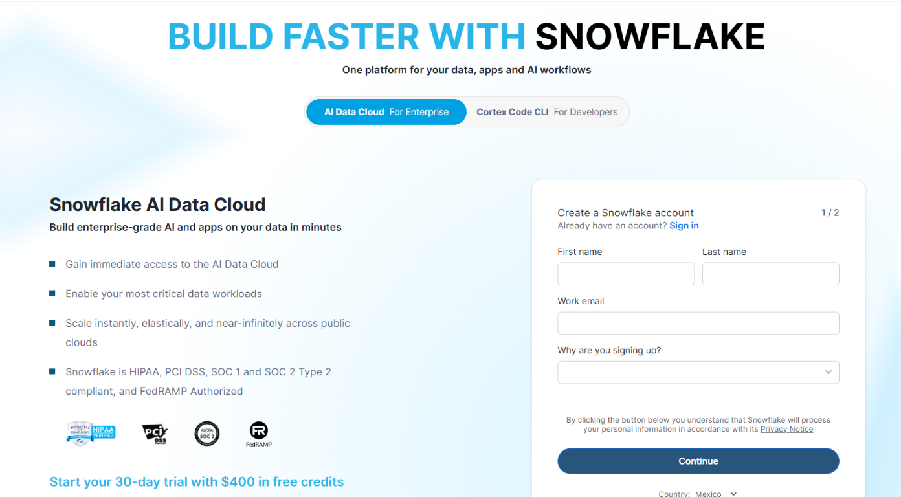
Snowflake's web interface is called Snowsight — this is where we'll work for the entire lab. You can also interact with Snowflake through the CLI (command line) or popular IDEs like VS Code, JetBrains, Cursor, and Claude Code, but Snowsight gives us everything we need in one place: a SQL editor, database explorer, dashboards, and AI assistance.
In this step, you'll open Cortex Code — Snowflake's AI-powered coding assistant built into Snowsight — and connect it to a GitHub repository. This gives you a fully integrated workspace where you can browse files, write code, and collaborate with AI, all without leaving the browser.
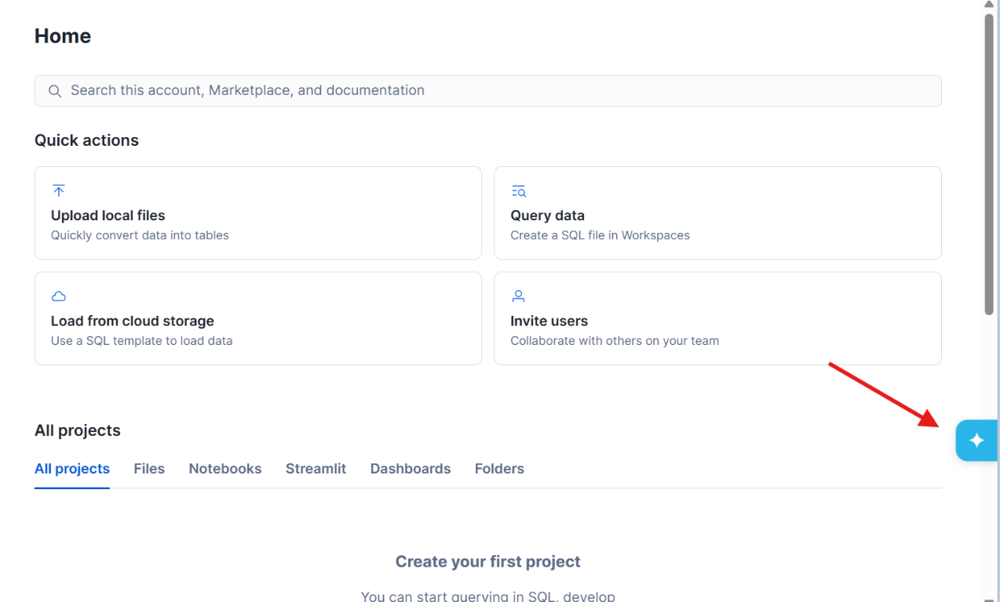
What is Cortex Code? Cortex Code is Snowflake's AI-powered development platform. You can ask it to write SQL, create objects, build applications, and more — all through natural language conversation. Think of it as your AI pair programmer that understands Snowflake natively.
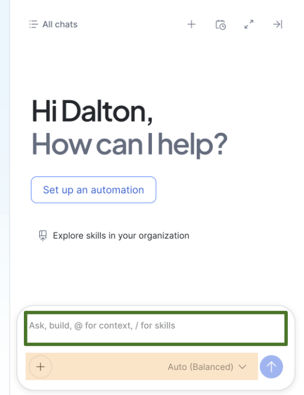
The green box is your main prompt input — this is where you'll type all prompts during this lab. The orange highlights show additional capabilities (adding context or invoking skills with +, and choosing a specific LLM such as Claude or OpenAI instead of letting Cortex choose with Auto) — these are available but won't be used in this session.
Other interfaces: In this lab we use Cortex Code inside Snowsight (the web UI), but it's also available through:
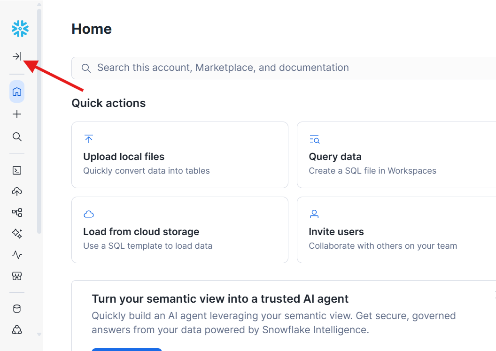
First, create an API integration so Snowflake can talk to GitHub. Copy and paste this prompt into Cortex Code:
Please create an API integration called github_buh_lab so I can
connect Snowflake to GitHub during this lab.
Use these settings:
- API_PROVIDER = git_https_api
- API_ALLOWED_PREFIXES = ('https://github.com/daltonryan6/')
- ENABLED = TRUE
After creating it, confirm the integration exists by running
SHOW INTEGRATIONS LIKE 'github_buh_lab'.
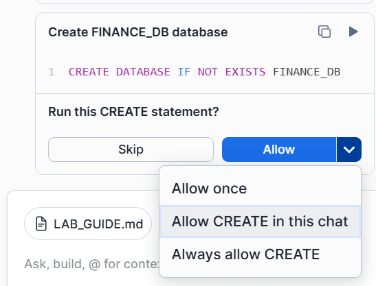
Now create a visual workspace to browse the repo files:
https://github.com/daltonryan6/buh-hol as the Repository URLgithub_buh_lab as the API Integration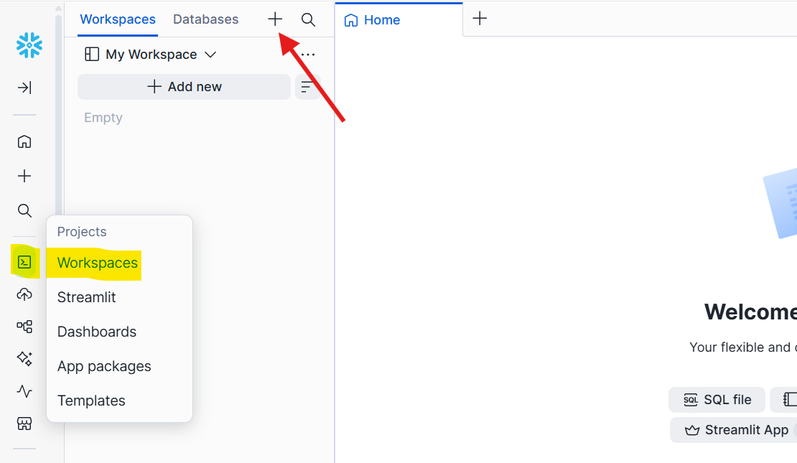
Note: Do not modify the SQL script — in the next step, we'll ask Cortex Code to run it for us exactly as-is.
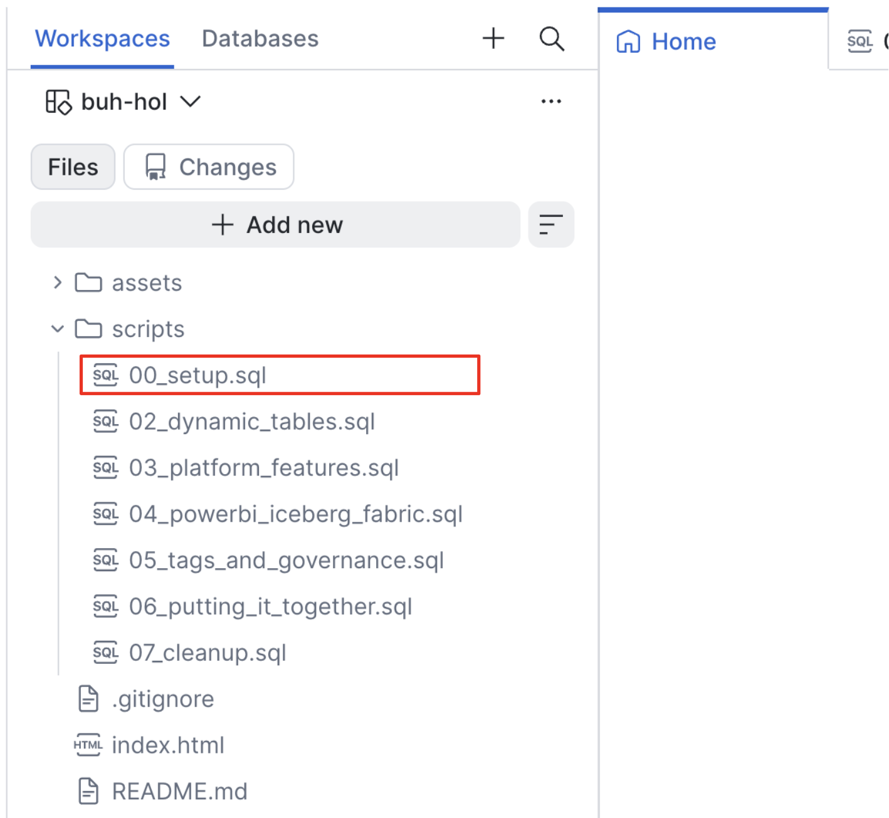
CoCo panel open, GitHub API integration created, Git workspace shows 7 SQL files in the scripts/ folder.
We'll start by creating our source (INBOUND) data — the raw tables that simulate what your extraction tools would land from Epic Clarity, Strata, and Workday. Everything else in the lab builds on top of this layer.
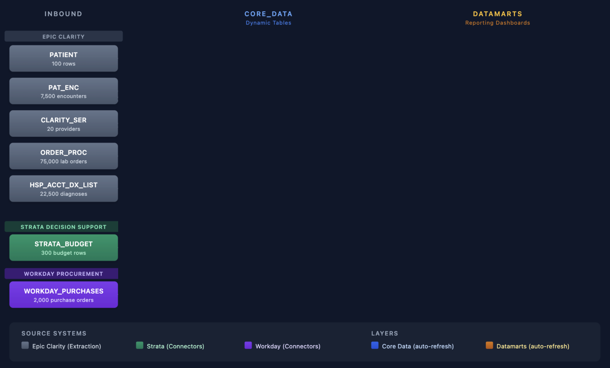
Now that your workspace is connected, run the setup script to build your entire lab environment in one shot.
Open scripts/01_setup.sql in your Git workspace, then click the Run All button in the top-right corner of the worksheet. This executes every statement in the file sequentially.
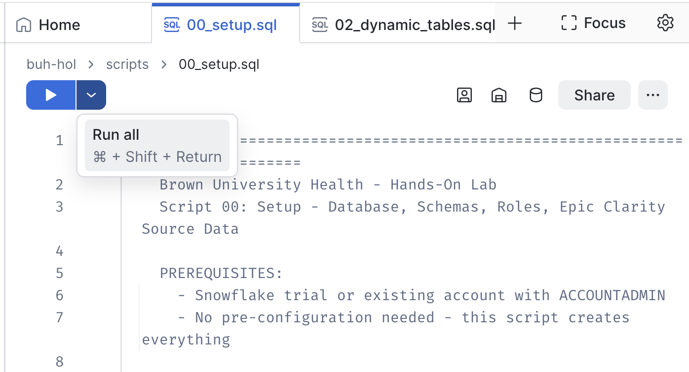
| Table | Source System | Rows |
|---|---|---|
| CLARITY_SER | Epic Clarity | 20 |
| HSP_ACCT_DX_LIST | Epic Clarity | 22,500 |
| ORDER_PROC | Epic Clarity | 75,000 |
| PAT_ENC | Epic Clarity | 7,500 |
| PATIENT | Epic Clarity | 100 |
| STRATA_BUDGET | Strata Decision Support | 300 |
| WORKDAY_PURCHASES | Workday Procurement | 2,000 |
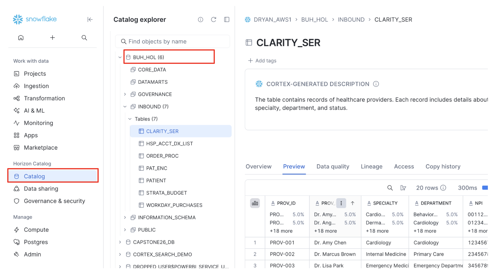
| Without Git workspaces | With Git workspaces |
|---|---|
| SQL in local files, Slack, shared drives | SQL versioned in Git with full history |
| No code review, no rollback | Pull requests and peer review |
| "Which version is in prod?" – unknown | Traceable: commit abc123 is in prod |
| Onboarding = copying files around | Clone and run |
BUH_HOL database with 4 schemas (INBOUND, CORE_DATA, DATAMARTS, GOVERNANCE). Seven INBOUND tables from 3 source systems: Epic Clarity (5 tables), Strata (budget), Workday (purchases).
Dynamic tables flip ETL: you declare what the result should look like, and Snowflake handles when to refresh. No cron jobs, no orchestration, no manual MERGE scripts. This replaces scheduled transformation jobs with declarative SQL.
Here's the data model you'll build — five source tables flow into a curated dimensional model, which feeds three reporting dashboards:
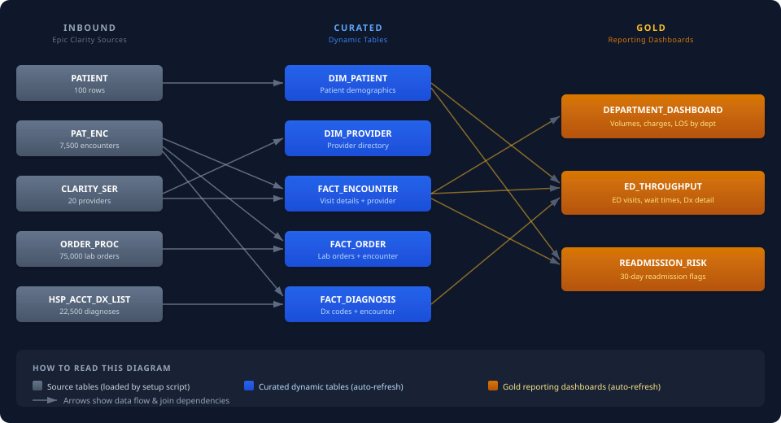
Copy and paste this prompt into Cortex Code:
Open the file scripts/02_dynamic_tables.sql from the buh-hol Git workspace. Run Part B only — the CORE_DATA layer. It creates 5 dynamic tables: DIM_PATIENT, DIM_PROVIDER, FACT_ENCOUNTER, FACT_DIAGNOSIS, and FACT_ORDER. After the tables are created, show me a row count for all 5 CORE_DATA dynamic tables to confirm they populated. Also run SHOW DYNAMIC TABLES IN SCHEMA BUH_HOL.CORE_DATA and show me the TARGET_LAG and REFRESH_MODE columns so we can see the settings.
REFRESH_MODE settings — most tables use INCREMENTAL (process only changed rows), but FACT_ENCOUNTER uses ADAPTIVE (auto-reinitializes when extraction tools does a bulk reload, then resumes incremental).
Now build the reporting layer on top of CORE_DATA. DEPARTMENT_DASHBOARD joins data from all three source systems (Clarity encounters + Strata budgets + Workday purchases).
Now run Part C of scripts/02_dynamic_tables.sql — the DATAMARTS layer. It creates 3 reporting tables: DEPARTMENT_DASHBOARD, ED_THROUGHPUT, and READMISSION_RISK. After the tables are created, run SHOW DYNAMIC TABLES IN SCHEMA BUH_HOL.DATAMARTS and show me the TARGET_LAG and REFRESH_MODE columns. Then query each DATAMARTS table and show me a few sample rows from each.
TARGET_LAG settings: 1 minute for ED real-time and 15 minutes for department reporting and analytics.
After CoCo creates the tables, you'll see an object pill in the response. Click it to navigate directly to that object in the database explorer, where you can inspect its details, lineage graph, data quality metrics, and more.
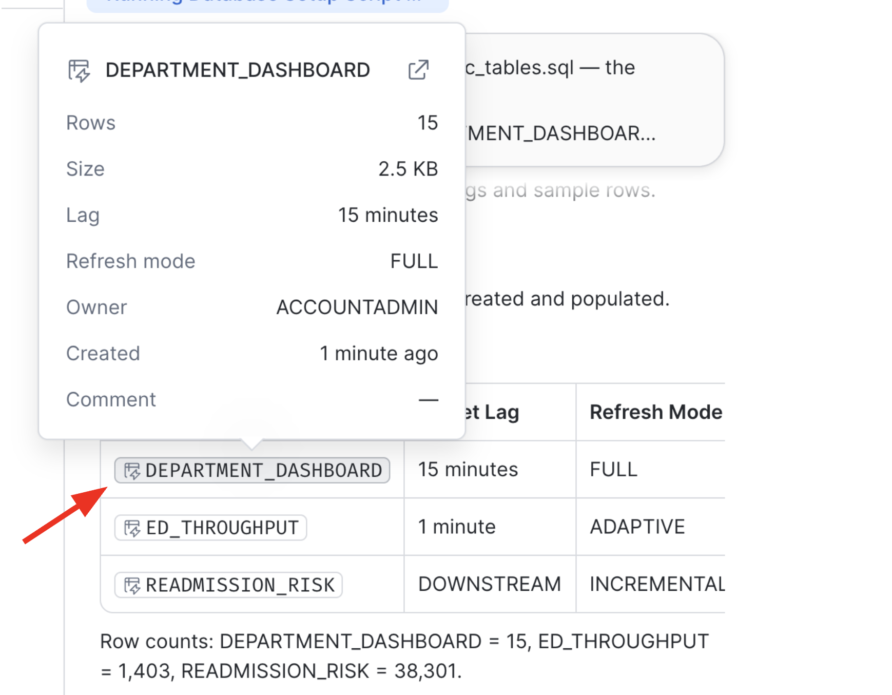
Here's the full picture of design choices across the pipeline:
| Layer | Dynamic Table | TARGET_LAG | REFRESH_MODE |
|---|---|---|---|
| CORE_DATA | DIM_PATIENT | 1 minute | INCREMENTAL |
| CORE_DATA | DIM_PROVIDER | 1 minute | INCREMENTAL |
| CORE_DATA | FACT_ENCOUNTER | 1 minute | ADAPTIVE |
| CORE_DATA | FACT_DIAGNOSIS | 1 minute | INCREMENTAL |
| CORE_DATA | FACT_ORDER | 1 minute | INCREMENTAL |
| DATAMARTS | DEPARTMENT_DASHBOARD | 15 minutes | FULL |
| DATAMARTS | ED_THROUGHPUT | 1 minute | ADAPTIVE |
| DATAMARTS | READMISSION_RISK | 15 minutes | INCREMENTAL |
TARGET_LAG controls freshness (how stale can it be?). REFRESH_MODE controls how the data is refreshed (incremental change processing, full rebuild, or adaptive). In production, set both explicitly — don't rely on defaults.
CURRENT_DATE() in dynamic table definitions — they prevent incremental refresh. Always set REFRESH_MODE explicitly; don't rely on AUTO in production.
Make sure you see all 8 dynamic tables before continuing. Run SHOW DYNAMIC TABLES IN DATABASE BUH_HOL — you should see 5 in CORE_DATA and 3 in DATAMARTS, all with SCHEDULING_STATE = 'ACTIVE'.
Dynamic tables are declarative — you define the result, Snowflake handles refresh. But some workflows need imperative event-driven logic: audit logging, notifications, triggering external systems. That’s where Streams + Tasks come in.
A Stream captures row-level changes (inserts, updates, deletes) on a table. A Task runs SQL on a schedule — or only when a stream has data. Together they give you CDC-triggered side effects.
Run Part E of scripts/02_dynamic_tables.sql — the Streams + Tasks section. It creates a STREAM on INBOUND.PATIENT that captures changes, an audit log table in the GOVERNANCE schema, and a TASK that runs every minute to log new patient arrivals. After everything is created, show me the stream and task status.
| Pattern | How it works | Best for |
|---|---|---|
| Dynamic Tables | Declare the result — Snowflake figures out when and how to refresh | Transformations, dimensional models, aggregations |
| Streams + Tasks | Capture changes, trigger actions on a schedule or when data arrives | Audit logs, notifications, complex CDC with side effects |
A new patient arrives in the ED with a stroke. Insert the data (simulating what your extraction tools would do) and watch it cascade through all layers — and get logged by the stream + task audit pipeline:
-- Insert new patient, encounter, diagnosis, and lab order -- (Run Part F in the script) -- Wait ~1 minute, then verify dynamic tables refreshed: SELECT * FROM BUH_HOL.CORE_DATA.DIM_PATIENT WHERE PAT_ID = 'P200001'; SELECT * FROM BUH_HOL.DATAMARTS.ED_THROUGHPUT WHERE PAT_ID = 'P200001'; SELECT * FROM BUH_HOL.DATAMARTS.DEPARTMENT_DASHBOARD WHERE DEPARTMENT_NAME = 'Emergency Department'; -- And check the audit log — the stream + task should have captured it: SELECT * FROM BUH_HOL.GOVERNANCE.PATIENT_AUDIT_LOG ORDER BY LOGGED_AT DESC;
SELECT NAME, STATE, REFRESH_START_TIME,
DATEDIFF('second', REFRESH_START_TIME, REFRESH_END_TIME) AS SECONDS
FROM TABLE(INFORMATION_SCHEMA.DYNAMIC_TABLE_REFRESH_HISTORY())
ORDER BY REFRESH_START_TIME DESC LIMIT 15;
8 dynamic tables (5 CORE_DATA + 3 DATAMARTS). New patient P200001 (Jorge Medina) appears in all layers after refresh. Stream + Task captured the insert into the audit log. Refresh history shows successful runs.
Your pipeline is running. Now let's explore platform features that complement it: instant environment cloning, cost controls, query caching, custom functions, and AI/ML.
Snowflake stores data as immutable micro-partitions (columnar, compressed). A clone creates a metadata-only copy that shares physical storage — it's instant and free until you write to the clone. Combined with time travel, this means even catastrophic mistakes are recoverable.
scripts/03_platform_features.sql in your worksheet and follow along as we run Part A block by block. We'll clone the PATIENT table, accidentally delete all patients, use time travel to see the data before the mistake, and recover it — all live.
Resource monitors track credit consumption and can notify or suspend a warehouse at configurable thresholds. Unlike Power BI’s shared capacity pool, each Snowflake warehouse is independent compute — one heavy ETL job can’t starve your BI queries.
Run Part B of scripts/03_platform_features.sql. It creates a resource monitor with credit quota and notification triggers, attaches it to our warehouse, and shows the monitor status. Show me the SHOW RESOURCE MONITORS output.
Snowflake has two main cache layers: Result cache (24h, free, no warehouse needed) and warehouse local disk cache (SSD). A third remote storage layer operates transparently. This is especially important for Power BI — when 50 users open the same dashboard, only the first query runs.
Run Part C of scripts/03_platform_features.sql. It runs the same DEPARTMENT_DASHBOARD query twice and then checks QUERY_HISTORY to prove the second execution was a cache hit (BYTES_SCANNED = 0). Show me the query history comparison.
Healthcare generates massive amounts of JSON (FHIR APIs, device feeds, lab bundles) and free-text documents (clinical notes, discharge summaries, radiology reports). Snowflake handles both natively.
Run Part D of scripts/03_platform_features.sql. It does three things:
1. Creates a table with FHIR-style JSON (vitals, allergies, medications)
and queries it with colon notation and LATERAL FLATTEN.
2. Reads a discharge summary PDF using AI_PARSE_DOCUMENT — no
external OCR tools needed.
3. Asks questions against the extracted PDF text using
EXTRACT_ANSWER ("What medications was the patient discharged on?"
and "What is the follow-up plan?").
Run all sections and show me the results.
: colon notation, explode arrays with LATERAL FLATTEN. For unstructured documents, AI_PARSE_DOCUMENT extracts text from PDFs and images stored on any Snowflake stage, and EXTRACT_ANSWER lets you ask natural-language questions against that text. No external services, no data movement.
Write Python, Java, JavaScript, or Scala functions that run inside Snowflake’s secure sandbox. No data leaves the platform — the function runs where the data lives.
Run Part E of scripts/03_platform_features.sql. It creates a Python UDF called CLINICAL_ACUITY_SCORE that classifies encounter severity based on type, length of stay, and charges. Then it runs the function against FACT_ENCOUNTER. Show me the top 20 results with their acuity classifications.
Snowflake Cortex runs LLM-powered functions directly in SQL — no API keys, no endpoints, no data movement. You pass text in, get intelligence out.
Run Part F of scripts/03_platform_features.sql. It does two things: 1. Uses AI_CLASSIFY to categorize ED diagnoses by clinical urgency (life-threatening, urgent, non-urgent) — no training step needed, just pass the text and the labels. 2. Uses AI_COMPLETE (an LLM) to generate plain-English visit summaries for ED encounters. Run both sections and show me the results.
AI_CLASSIFY categorized diagnoses into urgency levels with zero training — just SQL. AI_COMPLETE generated plain-English summaries from structured data. Other Cortex AI functions include AI_SENTIMENT, AI_SUMMARIZE, and AI_TRANSLATE. For document processing, see AI_PARSE_DOCUMENT and EXTRACT_ANSWER in section 3.4. See the Cortex AI docs for the full list.
Snowflake also provides ML functions that train, deploy, and serve models entirely inside Snowflake — no Python notebooks or external infrastructure. These require Enterprise Edition.
| Function | What it does | Healthcare example |
|---|---|---|
SNOWFLAKE.ML.FORECAST | Time series forecasting | Predict next month's ED visit volume |
SNOWFLAKE.ML.ANOMALY_DETECTION | Detect outliers in time series | Flag unusual spikes in lab orders or charges |
SNOWFLAKE.ML.CLASSIFICATION | Train/predict classifiers | Predict readmission risk from patient data |
SNOWFLAKE.ML.REGRESSION | Train/predict continuous values | Estimate expected length of stay |
The pattern is the same for all: CREATE trains the model, then !PREDICT runs inference — all in SQL, no deployment pipeline needed.
Zero-copy clone created and recovered. Resource monitor attached to warehouse. Query cache confirmed (second run = 0 bytes scanned). Semi-structured JSON queried with colon notation and LATERAL FLATTEN. PDF parsed and questions answered with AI. Python UDF classifying encounter acuity. Cortex AI classifying diagnoses by urgency and generating visit summaries.
Tags are key-value labels you attach to Snowflake objects — databases, schemas, tables, columns, warehouses, even roles. They serve two purposes: classification (label what data is, so you can discover and audit sensitive data) and policy enforcement (attach masking or row access policies to a tag, and every object with that tag is automatically protected).
Copy and paste this prompt into Cortex Code to create tags and masking policies:
Open the file scripts/04_tags_and_governance.sql from the buh-hol Git workspace and run Parts A through D. This creates governance tags, applies them to sensitive columns on the PATIENT table, creates masking policies, attaches those policies to the tags, and creates a row access policy on FACT_ENCOUNTER. After execution, show me SHOW TAGS IN DATABASE BUH_HOL and SHOW MASKING POLICIES IN DATABASE BUH_HOL to confirm everything was created.
| Object | Example tag |
|---|---|
| Warehouse | cost_center = 'Analytics' |
| Database | sensitivity = 'CONFIDENTIAL' |
| Table / View | contains_phi = 'Yes' |
| Column | pii_type = 'SSN' |
Tags cannot be applied to individual rows. They can be applied to users, roles, stages, warehouses, and many other object types.
scripts/04_tags_and_governance.sql in your worksheet. We'll walk through sections 4.2 through 4.5 block by block, running the SQL directly to see tags, masking, and row access policies in action.
Parts B and C tag sensitive columns on INBOUND.PATIENT using Clarity column names (SSN, MRN, name, email, phone, address, date of birth).
The key pattern: attach a masking policy to a tag, not individual columns. Every column with that tag is automatically protected.
We switch to each role and run the same query to show how masking returns different results depending on who's asking. Run Part E block by block in the worksheet.
| Role | First Name | SSN | DOB | |
|---|---|---|---|---|
| ADMIN | maria | 111-22-3333 | msantos@example.com | 1965-03-14 |
| CLINICIAN | maria | ***-**-3333 | msantos@example.com | 1965-03-14 |
| ANALYST | ***MASKED*** | ***-**-**** | ***MASKED*** | NULL |
Column masking controls what you see in a column. Row access policies control which rows you see at all. In this example, clinicians only see encounters in the Emergency Department, while admins and analysts see all departments.
| Role | Departments visible | Total rows |
|---|---|---|
| ADMIN | All 15 | ~7,500 |
| CLINICIAN | Emergency Department only | ~1,275 |
| Policy type | Controls | Example |
|---|---|---|
| Column masking | What you see in a column | SSN shows as ***-**-3333 for clinicians |
| Row access | Which rows you see at all | Clinicians only see their department's encounters |
Tags applied to Clarity source columns. Column masking: ADMIN sees full data, CLINICIAN sees partial SSN, ANALYST sees all masked. Row access: CLINICIAN sees only Emergency Department encounters, ADMIN and ANALYST see all departments.
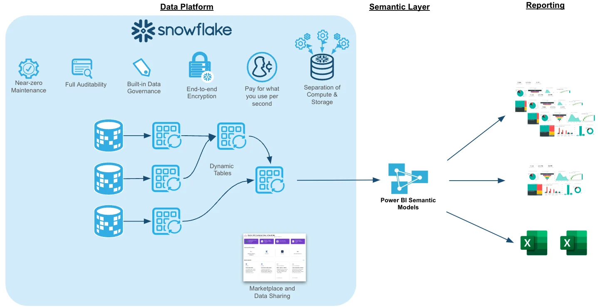
| Option | How it works | SF compute cost | Best for |
|---|---|---|---|
| DirectQuery | PBI sends SQL at query time | Warehouse runs during dashboard use | Operational dashboards |
| Import | PBI extracts data on a schedule | Warehouse runs only during refresh | Executive dashboards |
| Direct Lake (Fabric) | SF writes Iceberg to OneLake; PBI reads Parquet | Warehouse only writes Iceberg | Minimizing SF compute for BI |
Iceberg tables use the same SQL but store data in open Parquet format. In this lab we create a Snowflake-managed Iceberg table — data stays in Snowflake storage. To make data readable by external engines like Fabric or Spark, you'd specify an EXTERNAL_VOLUME pointing to your own cloud storage (see Part D in the script). Copy and paste this prompt into Cortex Code:
Open the file scripts/05_powerbi_iceberg_fabric.sql from the buh-hol Git workspace and run Part C. It creates a Snowflake-managed Iceberg table from our DATAMARTS.DEPARTMENT_DASHBOARD dynamic table. After execution, query the Iceberg table and show me the results sorted by TOTAL_CHARGES descending. Also run SHOW ICEBERG TABLES LIKE 'DEPT_DASHBOARD_ICEBERG' IN SCHEMA BUH_HOL.DATAMARTS so I can see the Iceberg-specific properties (catalog, storage, format version).
EXTERNAL VOLUME pointing to Microsoft OneLake, then write the Iceberg table there. Power BI reads via Direct Lake with zero Snowflake compute. The SQL is identical — you just add the EXTERNAL_VOLUME parameter. See Part D in the script for the full OneLake pattern.
| Layer | Recommended | Why |
|---|---|---|
| INBOUND | Snowflake default | Fast ingest, time travel, streams |
| CORE_DATA | Snowflake default (DT) | Joins, transforms, incremental refresh |
| DATAMARTS | Iceberg (OneLake) | Open format, Direct Lake, no SF compute for BI |
Without a Power BI license in this trial account, we can still build a live, interactive dashboard — right inside Snowflake. This focuses on the DEPARTMENT_DASHBOARD which consolidates all three source systems.
Create a Streamlit in Snowflake app called BUH_HOL.DATAMARTS.BUH_CLINICAL_DASHBOARD.
IMPORTANT: This runs inside Snowflake, so use
snowflake.snowpark.context.get_active_session() to get the session —
do NOT use st.connection("snowflake"). Use session.sql() to query data.
It should primarily query DEPARTMENT_DASHBOARD (which has encounter data
from Clarity, budget data from Strata, and purchasing data from Workday).
Include these interactive features:
1. A department filter dropdown (st.selectbox) that defaults to "All"
2. A bar chart of encounter counts by department, with budget overlay
showing ANNUAL_BUDGET vs TOTAL_CHARGES (budget vs actual)
3. A metric card row: total encounters, average PCT_BUDGET_CONSUMED,
total purchase orders, and total purchases amount
4. A table showing all departments with encounter, budget, and
purchasing columns — sortable by clicking column headers
Also add a second section using ED_THROUGHPUT:
5. A scatter plot of ED hours vs total charges, colored by provider
Use the warehouse BUH_ANALYTICS_WH. Add a title "Brown University Health —
Clinical Operations" and use st.columns for the metric cards. Make it
visually clean with st.divider() between sections.
You understand the three PBI connection options, why Fabric CUs matter, how Iceberg works, the recommended hybrid pattern, and you have a live Streamlit dashboard running on your DATAMARTS tables.
Copy and paste this prompt into Cortex Code to verify everything end-to-end:
Open the file scripts/06_putting_it_together.sql from the buh-hol Git workspace and run the full script. It checks row counts across all three layers (INBOUND, CORE_DATA, DATAMARTS) and reviews the dynamic table refresh history. Show me the results as a summary table so I can confirm the full pipeline is working end-to-end.
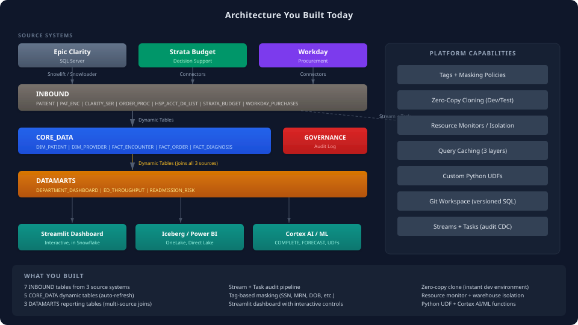
Row counts match across all three layers (INBOUND → CORE_DATA → DATAMARTS). All 8 dynamic tables show ACTIVE scheduling state. Pipeline is verified end-to-end.
| Topic | Key takeaway |
|---|---|
| Git Workspaces | Connect repo, browse files, run SQL directly – replaces file-share chaos |
| Dynamic Tables | Declare the result; Snowflake handles schedule and incremental refresh |
| Streams + Tasks | Event-driven complement to DTs – capture changes, trigger audit logs and side effects |
| Zero-Copy Cloning | Instant database copies for dev/test environments – free until you write to the clone |
| Resource Monitors | Credit quotas with auto-suspend – no noisy neighbors between workloads |
| Query Caching | Three cache layers – identical PBI queries hit result cache (free, instant) |
| Custom UDFs & Cortex AI | Python functions + LLM-powered classification and summarization run where the data lives – no data movement |
| Power BI / Iceberg | Write DATAMARTS as Iceberg to OneLake; PBI reads via Direct Lake, no SF compute |
| Tags & Masking | Tag PII columns; attach masking to the tag – one policy protects everything |
Copy and paste this prompt into Cortex Code to tear down all lab objects:
Open the file scripts/07_cleanup.sql from the buh-hol Git workspace and run the full script. It drops the BUH_HOL database, the three lab roles, and the GitHub API integration. Confirm everything was cleaned up successfully.
Or run the cleanup SQL directly:
USE ROLE ACCOUNTADMIN; -- Unset tags from external objects before dropping the DB that defines them ALTER WAREHOUSE BUH_ANALYTICS_WH UNSET TAG BUH_HOL.GOVERNANCE.COST_CENTER; ALTER WAREHOUSE BUH_PIPELINE_WH UNSET TAG BUH_HOL.GOVERNANCE.COST_CENTER; ALTER DATABASE BUH_HOL UNSET TAG BUH_HOL.GOVERNANCE.SENSITIVITY; -- Unset resource monitor and suspend task ALTER WAREHOUSE BUH_ANALYTICS_WH SET RESOURCE_MONITOR = NULL; ALTER TASK IF EXISTS BUH_HOL.INBOUND.LOG_PATIENT_CHANGES SUSPEND; -- Drop database (cascades all internal objects) DROP DATABASE IF EXISTS BUH_HOL; -- Drop account-level objects DROP RESOURCE MONITOR IF EXISTS BUH_LAB_MONITOR; DROP WAREHOUSE IF EXISTS BUH_PIPELINE_WH; DROP WAREHOUSE IF EXISTS BUH_ANALYTICS_WH; DROP ROLE IF EXISTS BUH_LAB_ADMIN; DROP ROLE IF EXISTS BUH_LAB_ANALYST; DROP ROLE IF EXISTS BUH_LAB_CLINICIAN; DROP API INTEGRATION IF EXISTS github_buh_lab;